Enter a number from the user and find out the binary of that number ?
#include <stdio.h> #include <conio.h> #include <dos.h> void main() { long n, binary=0, place=1; int rem; clrscr(); printf("Enter a number: "); scanf("%ld",&n); if(n<0) { printf("Enter a non-negative number"); } else { do { rem=n%2; binary=binary+rem*place; n=n/2; place=place*10; }while(n!=0); printf("Binary = %ld",binary); } delay(2000); }
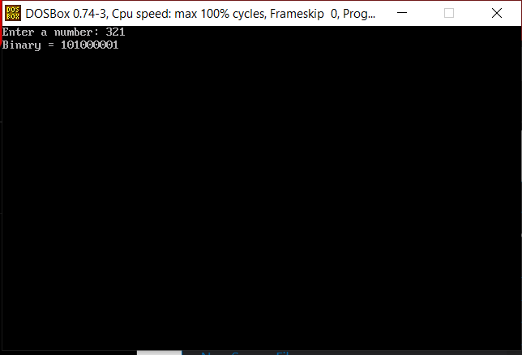
Enter a number from the user and check that the number is divisible by any prime number or not ?
#include <stdio.h> #include <conio.h> #include <dos.h> void main() { int n, i, j, prime, found=0; clrscr(); printf("Enter a number: "); scanf("%d",&n); for(i=2;i<=n;i++) { if(n%i==0) { prime=1; for(j=2;j<i;j++) { if(i%j==0) { prime=0; break; } } if(prime==1) { found=1; printf("Divisible by prime number %d",i); break; } } } if(found==0){ printf("Not divisible by any prime number"); } delay(2000); }
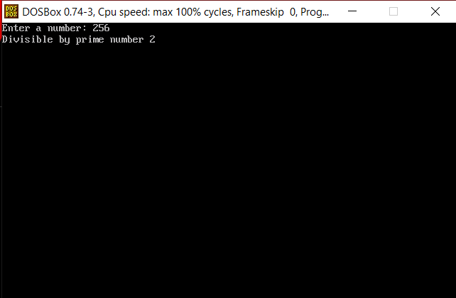
Enter a number from the user and check it is a prime number or not ?
#include <stdio.h> #include <conio.h> #include <dos.h> void main() { int n,i,flag=0; clrscr(); printf("Enter a number: "); scanf("%d",&n); if(n<=1) flag=1; for(i=2;i<n;i++) { if(n%i==0) { flag=1; break; } } if(flag==0) printf("Prime number"); else printf("Not a prime number"); delay(2000); }
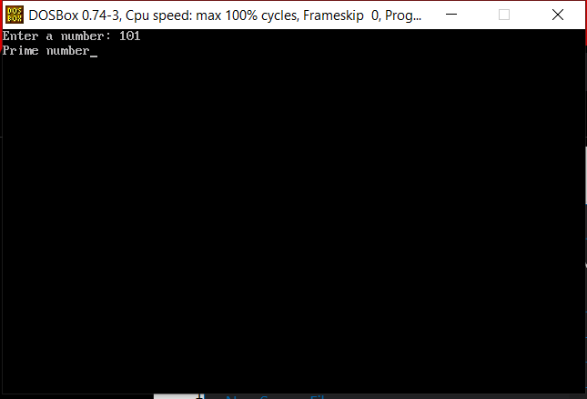
Enter a number from the user and print all digit of the number in separate line ?
#include <stdio.h> #include <conio.h> #include <dos.h> void main() { char num[20]; int i; clrscr(); printf("Enter a number: "); gets(num); for(i=0;num[i]!='\0';i++) printf("%c\n",num[i]); delay(2000); }
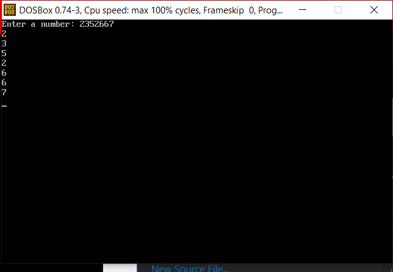
Write a program to print your name 1 lakh times ?
#include <stdio.h> #include <conio.h> #include <dos.h> void main() { long i; clrscr(); for(i=1;i<=100000;i++) { printf("Your Name\n"); } delay(2000); }
Write a program to print a series 1 to 1 lakh ?
#include <stdio.h< #include <conio.h< #include <dos.h< void main() { long i; clrscr(); for(i=1;i<=100000;i++) { printf("%ld\n",i); } delay(2000); }
Enter a number from the user and print the series from 1 to that number ?
#include <stdio.h> #include <conio.h> #include <dos.h> void main() { int n,i; clrscr(); printf("Enter a number: "); scanf("%d",&n); for(i=1;i<=n;i++) { printf("%d ",i); } delay(2000); }
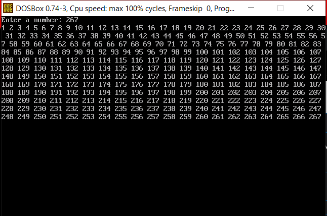
Enter a number from the user and print that number 100 time ?
#include <stdio.h> #include <conio.h> #include <dos.h> void main() { int n,i; clrscr(); printf("Enter a number: "); scanf("%d",&n); for(i=1;i<=100;i++) { printf("%d\n",n); } delay(2000); }
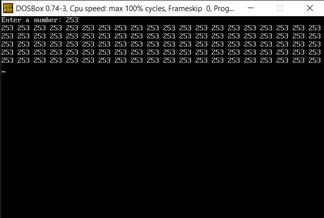
Write a program print all the odd number between 1 to 100 ?
#include <stdio.h> #include <conio.h> #include <dos.h> void main() { int i; clrscr(); for(i=1;i<=100;i=i+2) { printf("%d ",i); } delay(2000); }
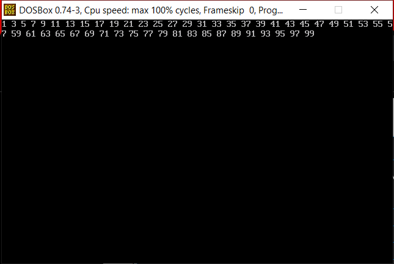
Write a program print the table of 4 in the format given as below (till 20)? 4*1=4 and so on
#include <stdio.h> #include <conio.h> #include <dos.h> void main() { int i; clrscr(); for(i=1;i<=20;i++) { printf("4*%d=%d\n",i,4*i); } delay(2000); }
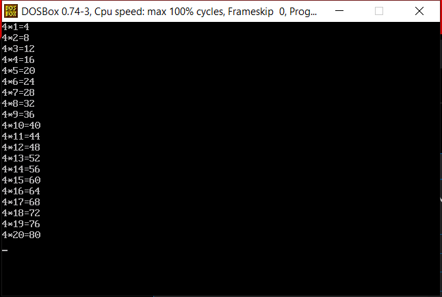
Enter the number from user and reverse the number?
#include <stdio.h> #include <conio.h> #include <dos.h> void main() { char num[20]; int i, count=0; clrscr(); printf("Enter a number: "); gets(num); for(i=0; num[i]!='\0'; i++) { count++; } printf("Reverse number: "); for(i=count-1; i>=0; i--) { printf("%c", num[i]); } delay(2000); }
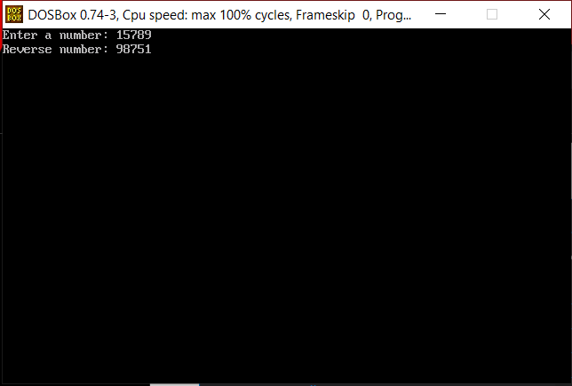
Enter a number from the user if the user enter 1 then you will perform addition operation by entering 2 number from user add it and display answer. if user enter 2 then subtract or if user enter 3 then multiply or if user enter 4 then divide or if user enter 5 then modulo or if any other number then print invalid .if user want to quit the program then user will enter Q. ?
#include <stdio.h> #include <conio.h> #include <dos.h> void main() { char choice; int a,b; clrscr(); while(1) { printf("\n1. Addition"); printf("\n2. Subtraction"); printf("\n3. Multiplication"); printf("\n4. Division"); printf("\n5. Modulo"); printf("\nQ. Quit"); printf("\nEnter choice: "); scanf(" %c",&choice); if(choice=='Q' || choice=='q') break; if(choice>='1' && choice<='5') { printf("Enter two numbers: "); scanf("%d%d",&a,&b); } switch(choice) { case '1': printf("Answer = %d\n",a+b); break; case '2': printf("Answer = %d\n",a-b); break; case '3': printf("Answer = %d\n",a*b); break; case '4': if(b!=0) printf("Answer = %.2f\n",(float)a/b); else printf("Cannot divide by zero\n"); break; case '5': if(b!=0) printf("Answer = %d\n",a%b); else printf("Cannot divide by zero\n"); break; default: printf("Invalid choice\n"); } } delay(2000); }
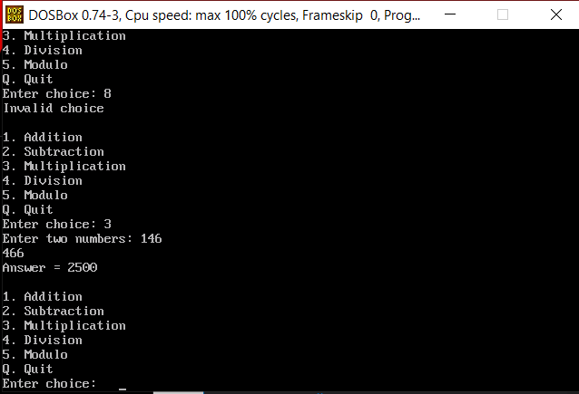
Enter the number from user and check its palindrome or not?
#include <stdio.h> #include <conio.h> #include <dos.h> void main() { char num[20]; int i, j, count=0, flag=0; clrscr(); printf("Enter a number: "); gets(num); for(i=0; num[i]!='\0'; i++) { count++; } for(i=0, j=count-1; i<j; i++, j--) { if(num[i]!=num[j]) { flag=1; break; } } if(flag==0) printf("Palindrome number"); else printf("Not a palindrome number"); delay(2000); }
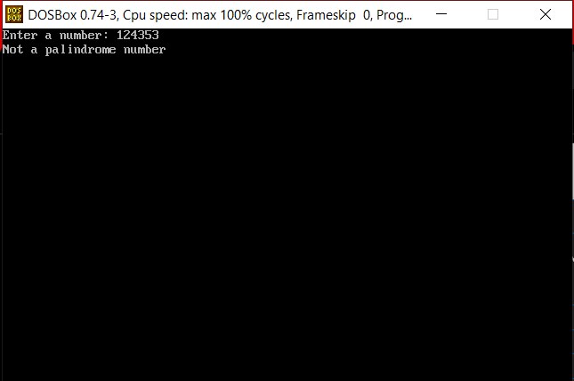
Enter two numbers from users, one is base and second is power. Write the result ?
#include<stdio.h> #include<conio.h> #include<dos.h> void main() { int base,power,i; long result=1; clrscr(); printf("Enter base: "); scanf("%d",&base); printf("Enter power: "); scanf("%d",&power); if(power<0) printf("Enter a non-negative power"); else { for(i=1;i<=power;i++) { result=result*base; } printf("Result = %ld",result); } delay(2000); }
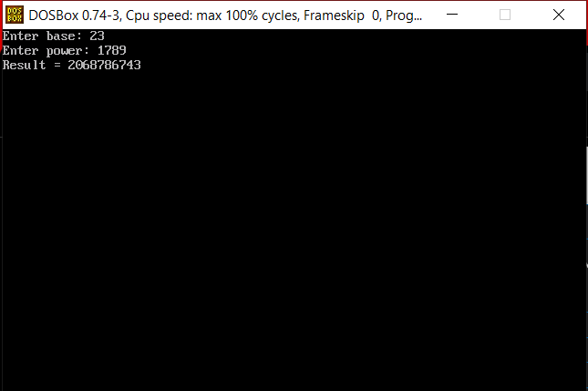
Enter a number from user and print first digit of number ?
#include<stdio.h> #include<conio.h> #include<dos.h> void main() { char num[20]; clrscr(); printf("Enter a number: "); gets(num); printf("First digit = %c", num[0]); delay(2000); }
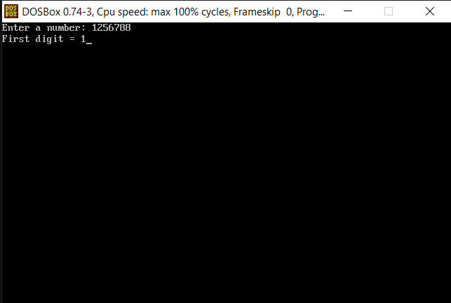
Enter a number from user and print total from 0 to that number ?
#include<stdio.h> #include<conio.h> #include<dos.h> void main() { int n, i, sum=0; clrscr(); printf("Enter a number: "); scanf("%d",&n); for(i=0;i<=n;i++) sum=sum+i; printf("Total = %d",sum); delay(2000); }
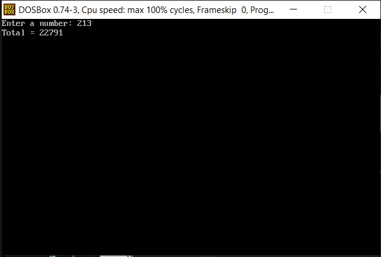
Enter a number from user and find out factorial of that number ?
#include<stdio.h> #include<conio.h> #include<dos.h> void main() { int n, i; long int fact=1; clrscr(); printf("Enter a number: "); scanf("%d", &n); if(n<0) { printf("Factorial not defined"); } else { for(i=1; i<=n; i++) { fact=fact*i; } printf("Factorial = %ld", fact); } delay(2000); }
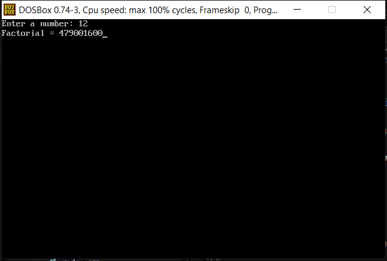
Enter two numbers from user and print range from first number to second number ?
#include<stdio.h> #include<conio.h> #include<dos.h> void main() { int a,b,i; clrscr(); printf("Enter first number: "); scanf("%d",&a); printf("Enter second number: "); scanf("%d",&b); for(i=a;i<=b;i++) { printf("%d ",i); } delay(2000); }
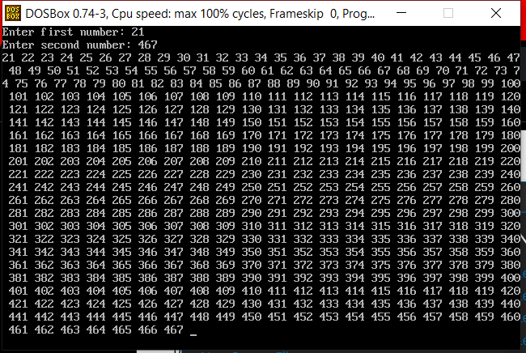
Enter password from user maximum 20 digits / character press enter key if you want to exit ?
#include<stdio.h> #include<conio.h> #include<dos.h> void main() { char pass[21], ch; int i=0; clrscr(); printf("Enter password: "); while(i<20) { ch=getch(); if(ch==13) break; pass[i]=ch; printf("*"); i++; } pass[i]='\0'; printf("\nPassword entered"); delay(2000); }
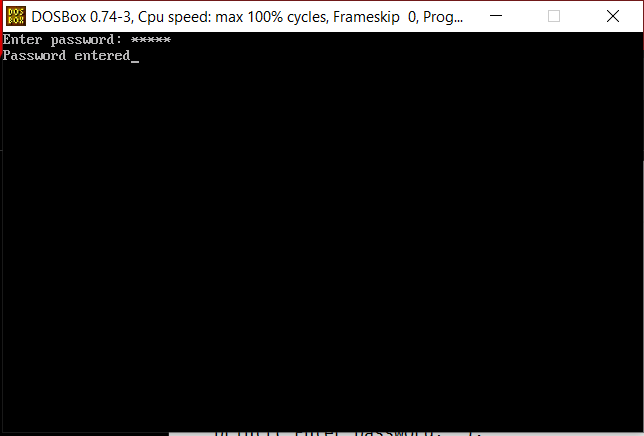
Write a program to print the counting 1 to 100 with one second delay ?
#include<stdio.h> #include<conio.h> #include<dos.h> void main() { int i; clrscr(); for(i=1;i<=100;i++) { printf("%d\n",i); delay(1000); } }
Write a program to find out the Fibonacci series/ 1 to 100 (like 0 1 1 2 3 5 8 13………..) ?
#include <stdio.h> #include <conio.h> #include <dos.h> void main() { int a=0,b=1,c; clrscr(); printf("%d %d ",a,b); c=a+b; while(c<=100) { printf("%d ",c); a=b; b=c; c=a+b; } delay(2000); }
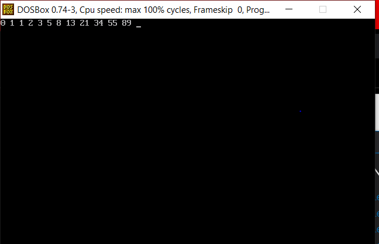
Enter a character from user and that character should be alphabet ?
#include <stdio.h> #include <conio.h> #include <dos.h> void main() { char ch; clrscr(); printf("Enter a character: "); scanf(" %c",&ch); if((ch>='A' && ch<='Z') || (ch>='a' && ch<='z')) printf("Alphabet"); else printf("Not an alphabet"); delay(2000); }
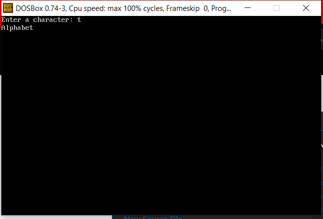
Check numbers from user is palindrome or not ?
#include <stdio.h> #include <conio.h> #include <dos.h> void main() { char num[20]; int i,j,flag=0; clrscr(); printf("Enter a number: "); gets(num); for(j=0;num[j]!='\0';j++); for(i=0,j=j-1;i<j;i++,j--) { if(num[i]!=num[j]) { flag=1; break; } } if(flag==0) printf("Palindrome"); else printf("Not palindrome"); delay(2000); }
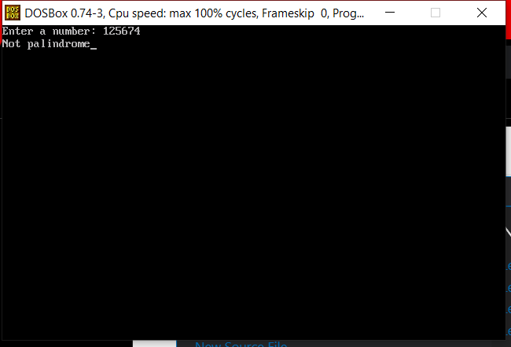
Enter a number from user and check it is Armstrong number or not ?
#include <stdio.h> #include <conio.h> #include <dos.h> void main() { int n, a, b, c, sum; clrscr(); printf("Enter a 3-digit number: "); scanf("%d", &n); a = n % 10; b = (n / 10) % 10; c = n / 100; sum = a*a*a + b*b*b + c*c*c; if(n>=100 && n<=999 && sum==n) printf("Armstrong number"); else printf("Not Armstrong number"); delay(2000); }
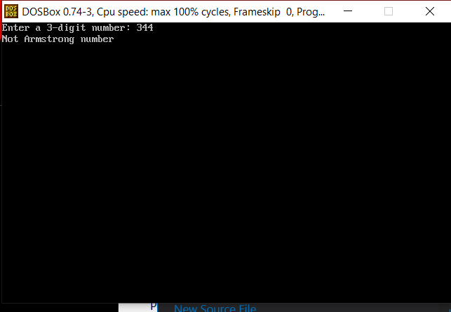